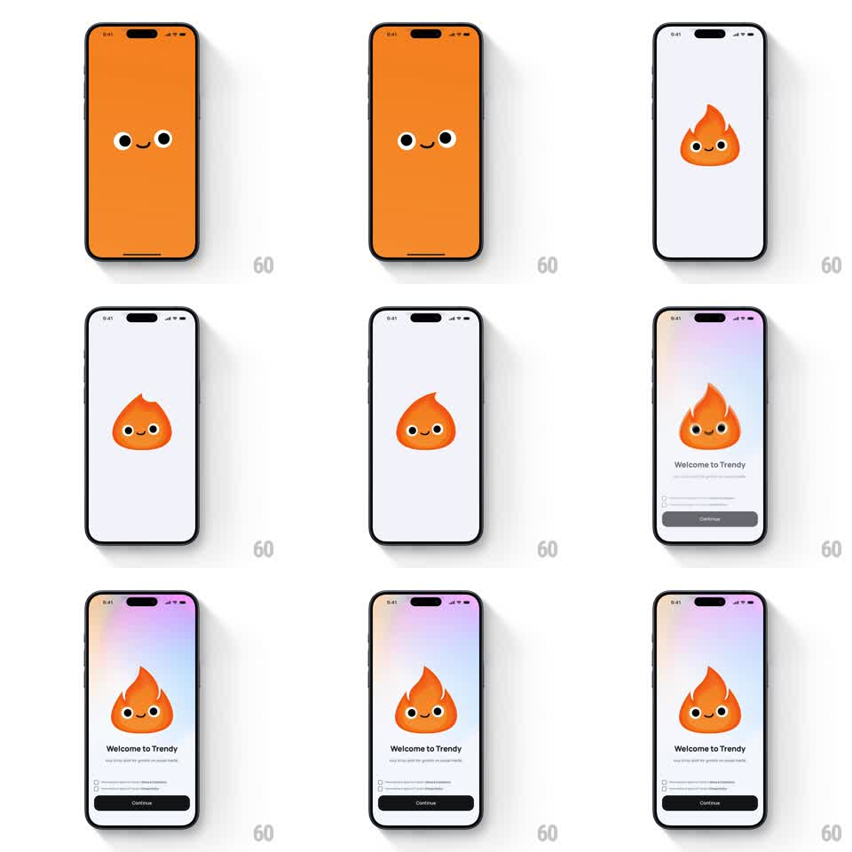

Media
Frame-by-frame

Rebuild this animation 1:1: Trendy's splash-to-intro transition - the full-screen orange mascot face zooms out into the small flame character on white, then the pastel gradient and welcome layout reveal around it.

Rebuild this animation 1:1: Trendy's splash-to-intro transition - the full-screen orange mascot face zooms out into the small flame character on white, then the pastel gradient and welcome layout reveal around it. ## Integration Integration: stack-agnostic spec - springs given as stiffness/damping, timed motions as duration + curve; map every value to your framework and animation library of choice. ## Scene Trendy onboarding: stage 1 is a full-bleed orange splash with the mascot's eyes and smile centered. Stage 2 is the white intro: the flame character icon centered, a soft purple-pink gradient washing the top half, "Welcome to Trendy" + tagline, terms checkboxes, and a black Continue button. ## Motion spec Pattern: seamless zoom-out morph from splash face to character icon. - Hold the splash face 400ms, then the camera pushes into the face (scale 1 -> 2.2 toward the eyes, 350ms ease-in) until orange fills everything. - Reverse out of the zoom: the flame character scales down from full-screen to the small icon (scale 2.2 -> 1 over 500ms, ease-out with a 4% overshoot) while the background crossfades orange -> white through the same move - one continuous motion, no cut. - The icon settles at center and idles with a tiny flame flicker (skew +/-2deg, 700ms loop). - The pastel gradient washes down from the top (opacity + translateY -30 -> 0, 500ms), then "Welcome to Trendy" and the tagline fade up (300ms), then the checkboxes and Continue button (250ms, 100ms apart). ## Calibration - The zoom-out and background swap are one transform - the character is the same element at both scales, not two images crossfading. - Eyes and smile keep their proportions at both scales. ## Reduced motion Splash crossfades to the intro layout (400ms) with the icon already at final size. ## Don't miss - The gradient only ever covers the top half - the bottom stays clean white for the form. - The face's eyes must be the zoom's anchor point - the whole move pivots around them.